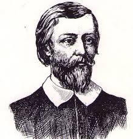
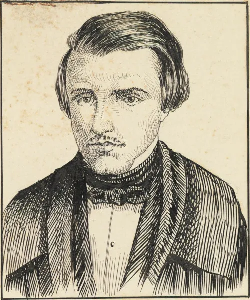

Introdução
O Barroco foi um movimento literário que predominou no Brasil entre os séculos XVII e XVIII, caracterizado por sua exuberância e contrastes.
O Barroco foi um movimento literário que predominou no Brasil entre os séculos XVII e XVIII, caracterizado por sua exuberância e complexidade. Este período foi marcado por uma forte influência religiosa, especialmente do catolicismo, e refletiu as tensões sociais e políticas da época. As obras barrocas apresentam contrastes, dualidades e um uso intenso de metáforas e antíteses. Autores como Gregório de Matos e Bento Teixeira exploraram temas como a passagem do tempo, a morte e a busca pela salvação, utilizando uma linguagem rica e ornamental.
Principais Autores
- Gregório de Matos 
- Bento Teixeira
- Álvares de Azevedo 
Obras Significativas
Análise de obras importantes e seus temas.
- Prosopopeia, de Bento Teixeira;
- Os sermões, de Padre António Vieira;
- Poesia de Gregório de Matos.